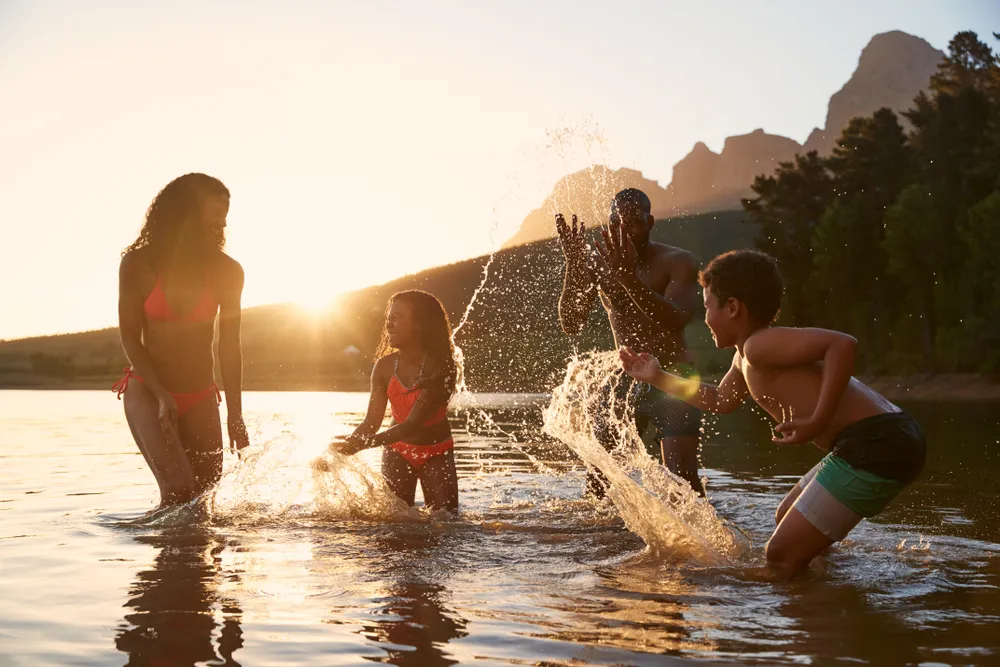

Outdoor Workouts: Easy Ways To Boost Your Health

- Adults need at least 150-minutes of moderate-intensity physical activity each week.
- While you can work out at the gym, working out outdoors when the weather is nice is not only a nice change of scenery but it can be extra motivating too.
- There are tons of effective and fun ways to boost your health outdoors such as paddleboarding, trail running, or a nice stroll through the neighborhood.
When the weather is good, nothing quite beats an outdoor workout. Not only can it change up your usual workout routine, but the change of scenery is always appreciated (and sometimes motivating!). So the next time the sun is shining and the temperature is just right, skip the gym or your usual indoor workout and get outside to get your body moving!
The great outdoors provides ample opportunity for exercise, with or without equipment. In case you need another reason to exercise outdoors, studies show that being out in nature may improve your mood, lower stress, and reduce your risk of psychiatric disorders, says the American Psychological Association . Here are 12 outdoor workouts to try that can help boost your health!
Walking
Don’t underestimate the power of walking! Walking boasts tons of health benefits from maintaining a healthy weight to improving cardiovascular fitness and muscle strength. It can also benefit your mental health, such as decreasing stress, improving energy levels, and improving memory and sleep, says the Mayo Clinic . Another bonus to walking is that it’s easy on your joints.
To make the most of your walking workout , be mindful of your technique. The source says you should keep your neck, shoulders, and back relaxed. As you walk, swing your arms freely with a slight bend at the elbows. Engage your core and keep your back straight, not arched backward or forward. Finally, be sure to walk heel to toe.
Stand-Up Paddleboard
If you’re looking for something fun and new to try, consider stand-up paddleboarding! If you think you might turn this into a new hobby, it may be worth investing in a paddleboard. However, if you’re just testing the waters, rent one instead.
Shape says stand-up paddleboarding is a great outdoor exercise that can build full-body strength. It requires core stability and control as well as lower body strength to maintain your balance. Keep in mind, it does take practice so don’t get discouraged after your first session!
Swimming
If paddleboarding isn’t your thing, don’t give up on the water just yet! Swimming is another great outdoor activity that’s full of health benefits . Swimming can be a total body workout as your body has to work against the resistance of the water. It’s also another great low-impact form of exercise and is gentle on your joints.
Some health benefits of swimming include building strength and endurance while also toning muscles. It may also help you maintain a healthy heart and lungs, improve coordination and balance, and help improve flexibility . Swimming is also very accessible. Enjoy your swimming workout at the beach, in a river, or at a pool.
Skiing and Snowboarding
You don’t have to wait for the weather to warm up to enjoy a good workout outside! Skiing and snowboarding are also great outdoor workouts that not only improve your cardiovascular health but also help improve your balance and coordination too.
Skiing and snowboarding can also help improve your core strength , flexibility, and your mood. Better yet, for those that enjoy it, it’s really fun! Healthline says, “In an hour of casual downhill skiing, a 170-pound (77-kg) person will likely burn around 385 calories.”
Park Bench Push-Ups
Push-ups are great exercises that can help build upper body strength, and you can do them anywhere! When you’re out for your next stroll around the neighborhood, consider adding park bench push-ups. You can try both incline and decline push-ups.
For an incline push-up, face the park bench and place your hands on the seat. Step backward until your legs are fully extended. Next, bend your arms and lower your chest towards the bench to complete a push-up. Try to complete 8- to 12-repetitions.
For a decline push-up, face away from the park bench. Place your hands on the ground and your feet on the bench and then move your hands until they’re aligned under your shoulders. Lower your chest towards the ground and push back up to complete a push-up. Try to complete for 8- to 12-reps.
Biking
While you may have a favorite spin class, when the weather is nice, take your bike outdoors! You don’t have to go on a long treacherous bike ride either. A short ride around your neighborhood during your workday can help boost your energy and have you returning to your desk refreshed and focused, explains Forbes .
Cycling has tons of health benefits too. For starters, it’s a great cardio workout that can keep your heart rate elevated. It also works the large muscles in your lower body, specifically the glutes, quadriceps, and hamstrings.
Sailing or Rowing Classes
There are more ways to get in the water than swimming and paddleboarding. Try something different and consider getting outdoors to enjoy a sailing or rowing class!
Sailing is a total body workout that targets your upper-body muscles. It can also help improve your endurance, agility, flexibility, and coordination, explains Shape. Rowing has many benefits too. It’s a low-impact cardio workout that targets your legs, abs, and back.
Tightrope Walk
Maintaining good coordination and balance is important for everyone, especially as you age. This can help prevent falls and keep you independent. Luckily, the tightrope walk can do just that! It’s also a great outdoor workout that targets your core , quadriceps, and calves.
You don’t have to literally walk along a rope either. When you’re out for a walk, find a curb, fallen tree, or any other smooth surface you can walk across. Walk across the “tightrope” with one foot in front of the other, heel to toe. Be sure to raise your arms out to the sides for extra balance. Try to practice for 3-minutes at a time.
Jump Rope
Did you enjoy jumping rope as a kid? It’s time to dust off your jump ropes and head outside for some fun and exercise. Jump rope happens to be an excellent cardio workout too.
Jumping rope can also help improve your coordination and it burns tons of calories! According to Forbes, you can burn “several hundred calories in just 15 minutes, depending on your body composition.” The source suggests jumping on two feet for 60-seconds followed by hopping on one foot for 30-seconds and then switching to the other foot for another 30-seconds. Try to repeat this routine for a 15-minute workout!
Trail Running
Jogging on the treadmill is a great workout, however, it can get boring. This is why when the weather is good you should consider getting outdoors for your running workout. And it turns out, trail running has even more benefits, aside from benefiting your cardiovascular health, of course! Since you’re running on uneven terrain, your body has to work harder to maintain balance.
Trail running also means you’ll need to adjust to incline changes which can add even more resistance to your workout. Just be sure to wear the right footwear to avoid injury.
High Intensity Interval Training
High intensity interval training (also known as HITT) is a great workout method that requires intense bursts of movement alternated with short recovery periods. Take your HIIT workout outdoors and enjoy all the amazing health benefits. Healthline says HIIT may help reduce blood pressure and blood sugar levels, improve oxygen consumption, gain muscle, and lose fat.
Most HIIT workouts last about 10- to 30-minutes. The activities performed can vary depending on how you like to work out. You can try a HIIT workout while jogging, biking, jumping rope, or doing other bodyweight exercises. For example, if you’re out for a jog you can sprint for 30-seconds and then light jog for 1-minute and continue alternating.
Volunteering
Traditional workouts are just one way to get active. Many other activities like cleaning your home, and even volunteering can burn calories and strengthen your muscles. Consider getting outdoors and giving back to your community.
Shape.com suggests volunteering to walk dogs at a local shelter or cleaning up trash in your neighborhood park. But these are just a few suggestions. There are many other ways you can get outdoors and stay active, while also contributing to your community. Search online for volunteer opportunities in your area.
Source: https://activebeat.com/fitness/outdoor-workouts-easy-ways-to-boost-your-health/